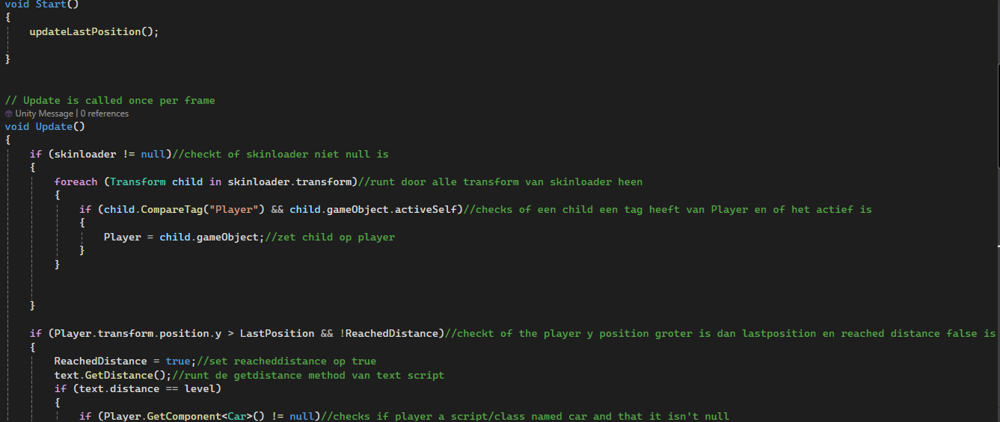
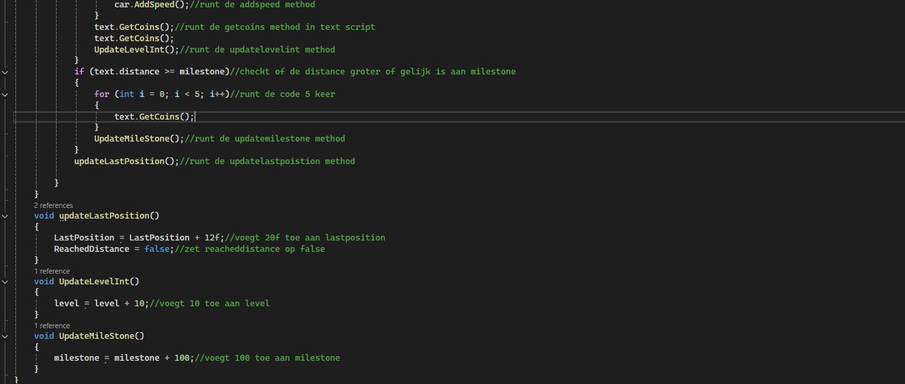

Week 1 runs from 30/09/2024 to 04/10/2024
During this week we started the project, brainstormed ideas, and eventually settled on our concept.
The idea was to create a kind of Subway Surfers game with a style inspired by Hotline Miami.
Here is our UX (User Experience) document.Week 2 runs from 07/10/2024 to 11/10/2024
We created the project, made good progress, and now have a prototype/release of our game.
Week 3 runs from 14/10/2024 to 18/10/2024
This week I implemented the achievements in the game and added the code for them.
I also made sure that the distance traveled is recorded correctly.
I also ensured that the crystals you earn based on distance in the game work properly.
Week 4 runs from 21/10/2024 to 25/10/2024
This week we adjusted the last few things in the project and fixed any remaining bugs.
What I did for this project was programming the UI. The design was done by a teammate, and I also implemented the distance check.
Below is some code from a script I wrote:
 